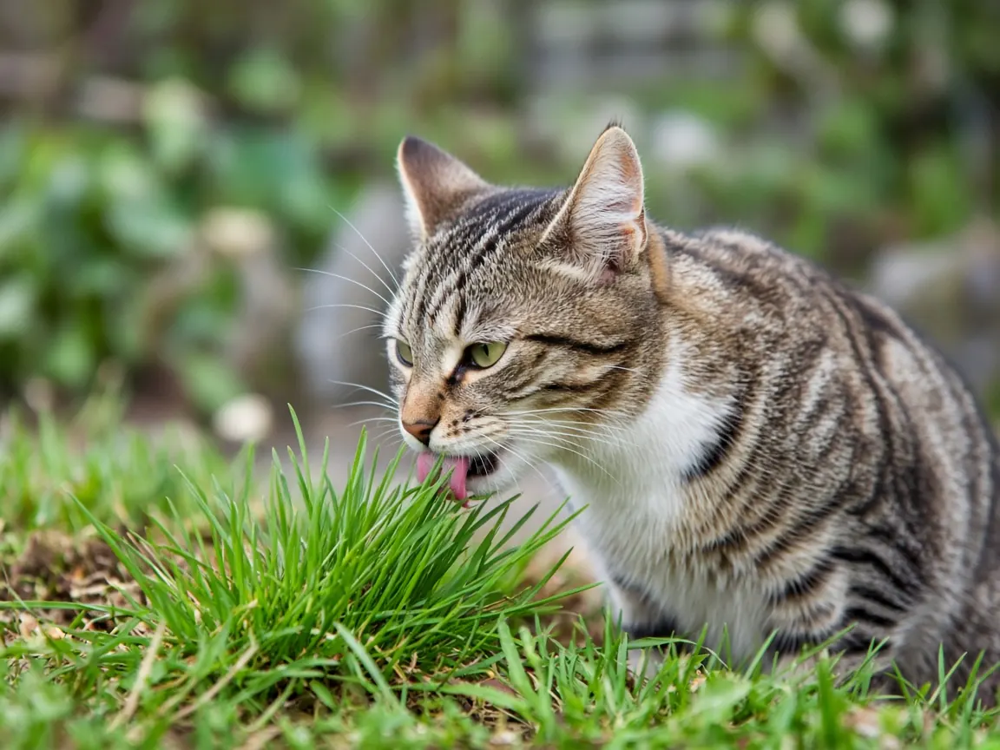

Why do cats eat grass?
Eating grass is a normal, very common cat behavior, and it is usually not a sign of illness. In two large surveys of cat owners, only 6 to 9 percent of cats looked unwell before eating plants, and 27 to 37 percent often vomited afterwards. Researchers at UC Davis think the habit is an inherited instinct: wild cats and other carnivores eat grass too, possibly because it helps push intestinal worms out.

How common is grass eating in cats?
Very common. Benjamin Hart and colleagues at the University of California, Davis ran two online surveys of cat owners, one launched in 2006 and one in 2016, and kept only owners who saw their cat for at least three hours a day and whose cat had access to safe plants. In the first survey (about 1,900 to 2,000 usable answers, depending on the question), 65 percent of cats ate plants every week. In the second survey (1,021 usable answers), 71 percent of cats had been seen eating plants at least six times and only 11 percent had never been seen eating any.
For cats a year old or older, grass was the plant eaten most often. Kittens under a year ate other plants more often than grass, which matters if you keep houseplants.
Do cats eat grass because they feel sick?
Mostly no. If cats ate grass to treat an upset stomach, you would expect them to look ill first. In the first survey 94 percent of cats appeared normal before eating plants, and in the second 91 percent did. The authors concluded that the feeling ill explanation was not supported.
Vomiting is more common. In the first survey 37 percent of plant eating cats were reported to vomit often afterwards, and in the second 27 percent. Vomiting became more frequent with age, reaching 57.1 percent in cats over 9 years, so the authors suggest that in some cats a stomach upset may play a part. Still, most bouts of grass eating did not end in vomiting.
Is it to get rid of hairballs?
The surveys argue against it. Long haired cats swallow more fur and bring up more hairballs, so if grass helped clear hair, long haired cats should eat more of it. They did not: domestic shorthairs and longhairs ate plants just as often, and so did short haired Siamese and long haired Burmese cats. A separate veterinary review by Cannon (2013) also warns that frequent hairballs in a short haired cat are often a sign of an underlying problem such as itchy skin, fleas or a gut disorder, rather than something to fix with grass.
The leading theory: an instinct from wild ancestors
Grass eating is widespread across the order Carnivora. Franck and Farid (2020) searched 352 studies of scats and stomach contents and found evidence of fibrous plant eating in 124 carnivore species, about 41 percent of the order, with grass recorded in 95 species. Nine of those studies found intestinal parasites together with grasses or sedges in scats, which led the authors to suggest that the rough, fibrous plant tissue helps expel worms.
Hart and colleagues build on this. Almost every wild carnivore carries some intestinal parasites, so a regular habit of eating grass could help keep the worm load down, even though the animal cannot sense the worms. Young carnivores suffer most from parasites, and in the surveys younger cats ate plants more often than older cats: among cats aged 3 or under, 39 percent ate plants daily, compared with 27 percent of older cats. The same team found a similar pattern in dogs (Sueda, Hart and Cliff, 2008). The authors are clear that this is the best remaining explanation rather than a proven one, since an experiment to test it directly is not feasible.
What this means for your cat
- Occasional grass eating is normal. You do not need to stop it.
- Give indoor cats a safe option. The study authors say a pot of cat grass is a sensible idea for indoor cats with no outdoor plants. In the second survey, a third of owners of regular plant eaters already provided one.
- Check your houseplants. Cats with an urge to chew plants will try houseplants, and some are dangerous. Lilies can cause fatal kidney failure. Use our plants toxic to cats checker and the ASPCA plant list before bringing a plant home.
- Watch for changes. See a vet if your cat starts eating grass far more than usual, vomits often, loses weight or appetite, or seems unwell. Our cat health guide lists warning signs.
Cats are obligate carnivores, so grass is not a meaningful part of their nutrition; see our cat nutrition guide for what they do need. For other plant behavior, read why do cats like catnip? Every paper cited here is listed on our cat research page.
Cat grass FAQ
Is it normal for my cat to eat grass?
Yes. In a UC Davis survey 65 percent of cats ate plants weekly, and in a second survey only 11 percent had never been seen eating plants.
Why does my cat throw up after eating grass?
Some cats do, especially older ones: 27 to 37 percent of plant eating cats often vomited afterwards. Occasional vomiting can be normal, but frequent vomiting, weight loss or lethargy needs a vet check.
Should I let my indoor cat eat grass?
Offering safe cat grass is reasonable and recommended by the study authors, since most cats seem to want to eat plants. It also steers them away from houseplants, some of which are toxic.
Do cats eat grass when they have worms?
A leading theory is that wild ancestors ate grass to help expel intestinal worms, but cats cannot sense worms and grass is not a dewormer. Ask your vet about a deworming schedule.
Sources
- Hart B.L., Hart L.A., Thigpen A.P., Willits N.H. (2021) Characteristics of plant eating in domestic cats. Animals 11(7):1853. doi:10.3390/ani11071853
- Franck A.R., Farid A. (2020) Many species of the Carnivora consume grass and other fibrous plant tissues. Belgian Journal of Zoology 150:1 to 70. doi:10.26496/bjz.2020.73
- Sueda K.L.C., Hart B.L., Cliff K.D. (2008) Characterisation of plant eating in dogs. Applied Animal Behaviour Science 111(1 to 2):120 to 132. doi:10.1016/j.applanim.2007.05.018
- Cannon M. (2013) Hair balls in cats: a normal nuisance or a sign that something is wrong? Journal of Feline Medicine and Surgery 15(1):21 to 29. doi:10.1177/1098612X12470342
- ASPCA Animal Poison Control: Toxic and non toxic plants
Cite this page
Students and teachers are welcome to cite this page. Add your access date if your teacher or style guide asks for one.
APA (7th ed.)
MeowWise. (2026, October 21). Why do cats eat grass? https://meowwise.com/blog/why-do-cats-eat-grass.html
MLA (9th ed.)
“Why do cats eat grass?” MeowWise, Joshua Israel Ventures LLC, 21 Oct. 2026, meowwise.com/blog/why-do-cats-eat-grass.html.
Chicago (bibliography)
MeowWise. “Why do cats eat grass?” Joshua Israel Ventures LLC. Last modified October 21, 2026. https://meowwise.com/blog/why-do-cats-eat-grass.html.
General education, not veterinary advice. If you are worried about your cat, contact your veterinarian; in an emergency, go to the nearest emergency vet.